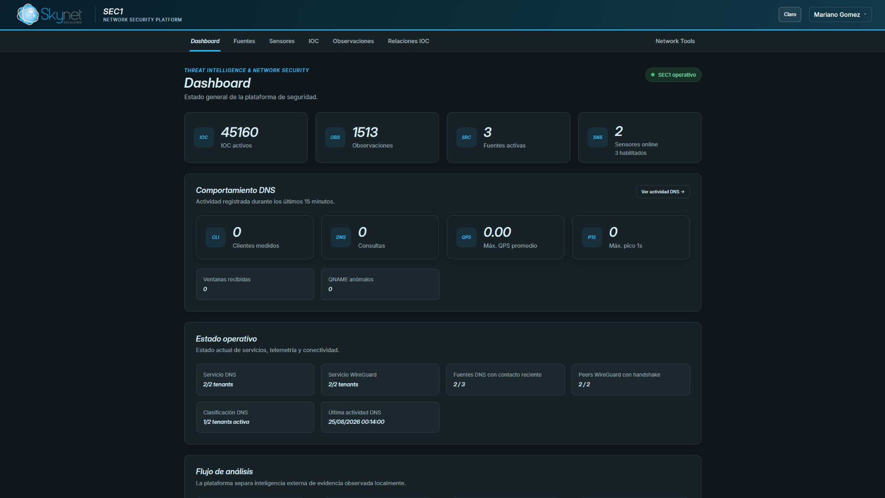
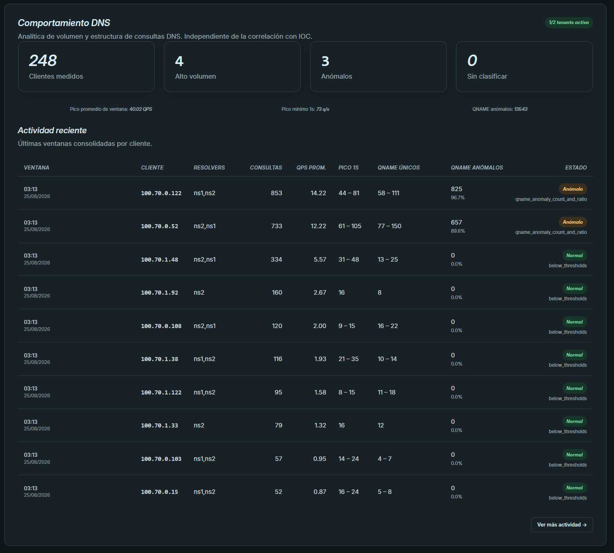
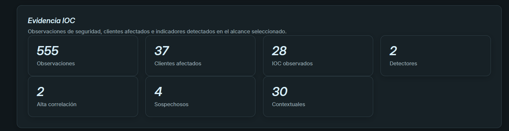
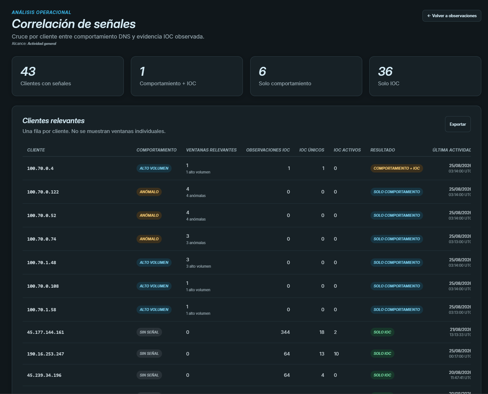
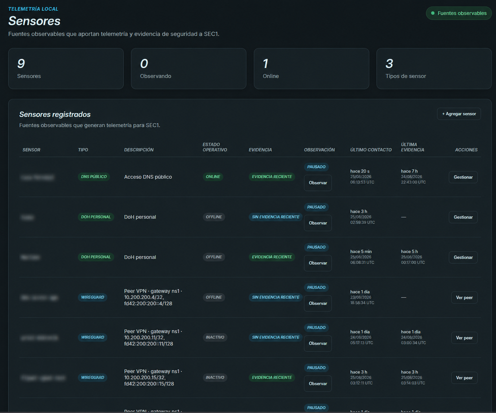

La red genera señales. SEC1 las organiza.
Observabilidad y análisis de seguridad para ISP's y empresas. SEC1 reúne telemetría, comportamiento e indicadores para ayudar a encontrar clientes afectados y priorizar investigación.

De telemetría a evidencia útil
SEC1 está pensado para investigar redes reales sin reducir todo a una alerta aislada. Permite observar, correlacionar y enfocar la atención donde aparecen señales relevantes.
Volumen, picos, repetición y anomalías estructurales por cliente y ventana de tiempo.
Relaciona observaciones con indicadores conocidos para aportar contexto a la investigación.
Permite enfocar el análisis sobre redes y sensores seleccionados durante una investigación.
Consolida resultados para seguimiento, análisis y comunicación con equipos técnicos.
Una vista técnica, sin perder contexto
Las pantallas de SEC1 separan comportamiento, evidencia y correlación para que una anomalía estadística no sea confundida automáticamente con una amenaza confirmada.
Identificar clientes que se salen de la línea normal
SEC1 consolida ventanas de comportamiento y permite distinguir actividad normal, alto volumen y patrones anómalos para priorizar clientes concretos.
- Promedio y picos de consultas.
- QNAME únicos y repetición.
- Razones de clasificación visibles.

Separar señal, evidencia e indicador
La plataforma muestra observaciones de seguridad, clientes afectados e indicadores detectados dentro del alcance seleccionado.
- Clientes afectados.
- Indicadores observados.
- Detectores y nivel de correlación.

Priorizar lo que merece investigación
La correlación ayuda a reunir señales dispersas y permite revisar el contexto técnico de un cliente sin convertir una observación aislada en una conclusión automática.

Telemetría distribuida y alcance controlado
SEC1 puede trabajar con diferentes fuentes de telemetría y redes observables, permitiendo seleccionar el alcance adecuado para cada campaña.

Cómo trabaja SEC1
El objetivo no es reemplazar el criterio técnico, sino reducir el tiempo necesario para encontrar dónde mirar.
Recibe telemetría de los sensores habilitados.
Construye comportamiento por cliente y ventana.
Relaciona señales con evidencia e indicadores disponibles.
Presenta clientes y eventos que requieren revisión técnica.
SEC1 para su red
Conversemos sobre el alcance, sensores disponibles y el tipo de análisis que necesita su operación.